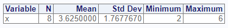
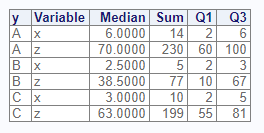

The proc_means function simulates a SAS® PROC MEANS
procedure. It is used to generate summary statistics on numeric
variables. The function is both interactive and can return datasets. By
default, it is interactive only, and returns a NULL unless output data
is requested.
Create Sample Data
First let’s create some sample data. This sample data is identical to
that created for the proc_freq tutorial, but has an
additional grouping variable “g”:
# Create sample data
dat <- read.table(header = TRUE,
text = 'x y z g
6 A 60 P
6 A 70 P
2 A 100 P
2 B 10 P
3 B 67 Q
2 C 81 Q
3 C 63 Q
5 C 55 Q')
# View sample data
dat
x y z g
1 6 A 60 P
2 6 A 70 P
3 2 A 100 P
4 2 B 10 P
5 3 B 67 Q
6 2 C 81 Q
7 3 C 63 Q
8 5 C 55 QGet Summary Statistics
If no parameters are specified, the proc_means function
will calculate N, Means, Standard Deviation, Minimum, and Maximum on all
numeric variables.
# Turn off printing for CRAN checks
options("procs.print" = FALSE)
# No parameters
proc_means(dat)
Note that the options statement above has been added to
pass CRAN checks. When you are running code samples, this statement may
be omitted.
Selected Variables
If you don’t want statistics on all numeric variables, you may
specify variables on the var parameter:
# Specific variable
proc_means(dat, var = x)
Statistics Options
The proc_means function has a stats
parameter that allows you to control which statistics are generated.
There are many statistics keywords. Here is a sample of some of the most
frequently used keywords:
| Keyword | Description |
|---|---|
| N | Number of Observations |
| NMISS | Number of missing observations |
| MEAN | Arithmetic mean |
| STD | Standard Deviation |
| MIN | Minimum |
| MAX | Maximum |
| SUM | Sum of observations |
| MEDIAN | 50th percentile |
| P1 | 1st percentile |
| P5 | 5st percentile |
| P10 | 10th percentile |
| P90 | 90th percentile |
| P95 | 95th percentile |
| P99 | 99th percentile |
| Q1 | First Quartile |
| Q3 | Third Quartile |
Now that we know some statistics keywords, let’s practice using them. Here is an example which calculates the median, sum, first quartile, and third quartile for all numeric variables in our sample data:
# Custom statistics options
proc_means(dat, stats = v(median, sum, q1, q3))
Output Datasets
Similar to the proc_freq function,
proc_means can return datasets. There are two options:
“out” and “report”. The “out” option returns datasets meant for further
manipulation and analysis. The “report” keyword requests the exact
datasets used in the interactive report. Specifying either one of these
options will cause the function to return data.
Here is an example that shows the difference in the “report” and “out” options:
# Output dataset using "report" option
res1 <- proc_means(dat,
stats = v(median, sum, q1, q3),
options = v(report, noprint))
# View results
res1
# VAR MEDIAN SUM Q1 Q3
# 1 x 3 29 2.0 5.5
# 2 z 65 506 57.5 75.5
# Output dataset using "out" option
res2 <- proc_means(dat,
stats = v(median, sum, q1, q3),
options = v(out, noprint))
# View results
res2
# TYPE FREQ VAR MEDIAN SUM Q1 Q3
# 1 0 8 x 3 29 2.0 5.5
# 2 0 8 z 65 506 57.5 75.5As can be seen in the above example, the “out” option includes additional variables for TYPE and FREQ. These additional variables can be turned off with more options:
# Turn off TYPE and FREQ variables
res3 <- proc_means(dat,
stats = v(median, sum, q1, q3),
options = v(out, noprint, notype, nofreq))
# View results
res3
# VAR MEDIAN SUM Q1 Q3
# 1 x 3 29 2.0 5.5
# 2 z 65 506 57.5 75.5Grouping
The proc_means function provides two grouping
parameters: class and by. These parameters
identify a variable or variables for subsetting the input data. While
these parameters have similar capabilities, there are some difference
between them. The differences can be examined by comparing the two
function calls.
Class
# Class grouping
res1 <- proc_means(dat, stats = v(median, sum, q1, q3),
class = y,
options = out)
Below is the output dataset from the class parameter.
Notice that summary values have been provided for each variable, in
addition to the subsets by the class variable. The summary rows are
identifed by TYPE = 0, while the subset rows are TYPE = 1.
# View results - class
res1
# CLASS TYPE FREQ VAR MEDIAN SUM Q1 Q3
# 1 <NA> 0 8 x 3.0 29 2.0 5.5
# 2 <NA> 0 8 z 65.0 506 57.5 75.5
# 3 A 1 3 x 6.0 14 2.0 6.0
# 4 A 1 3 z 70.0 230 60.0 100.0
# 5 B 1 2 x 2.5 5 2.0 3.0
# 6 B 1 2 z 38.5 77 10.0 67.0
# 7 C 1 3 x 3.0 10 2.0 5.0
# 8 C 1 3 z 63.0 199 55.0 81.0By
Here is the same analysis using the by parameter instead
of the class parameter:
# By grouping
res2 <- proc_means(dat, stats = v(median, sum, q1, q3),
by = y,
options = out)
Notice that with the by parameter, separate tables are
created for each by group on the interactive report.
Now let’s look at the output dataset:
# View results - by
res2
# BY TYPE FREQ VAR MEDIAN SUM Q1 Q3
# 1 A 0 3 x 6.0 14 2 6
# 2 A 0 3 z 70.0 230 60 100
# 3 B 0 2 x 2.5 5 2 3
# 4 B 0 2 z 38.5 77 10 67
# 5 C 0 3 x 3.0 10 2 5
# 6 C 0 3 z 63.0 199 55 81The output dataset is also different from the class
output. While the TYPE variables exists on the output dataset, the
output data for the by group does not include the summary rows. The
summary rows are a feature of the class variable. You
should select the grouping parameter that most suits your needs.
Multiple Groups
Class
The proc_means function can perform analysis with
multiple grouping variables. First let’s examine what happens when we
pass multiple grouping variables to the class
parameter:
# Class grouping - two variables
res1 <- proc_means(dat, stats = v(median, sum, q1, q3),
class = v(g, y),
options = out)
Here is the output dataset:
# View results - two class variables
res1
# CLASS1 CLASS2 TYPE FREQ VAR MEDIAN SUM Q1 Q3
# 1 <NA> <NA> 0 8 x 3 29 2.0 5.5
# 2 <NA> <NA> 0 8 z 65 506 57.5 75.5
# 3 P A 1 3 x 6 14 2.0 6.0
# 4 P A 1 3 z 70 230 60.0 100.0
# 5 P B 1 1 x 2 2 2.0 2.0
# 6 P B 1 1 z 10 10 10.0 10.0
# 7 Q B 1 1 x 3 3 3.0 3.0
# 8 Q B 1 1 z 67 67 67.0 67.0
# 9 Q C 1 3 x 3 10 2.0 5.0
# 10 Q C 1 3 z 63 199 55.0 81.0By
Now let’s see what happens when we use the by parameter
with two variables:
# By grouping - two variables
res2 <- proc_means(dat, stats = v(median, sum, q1, q3),
by = v(g, y),
options = out)
Here is the output dataset for the by parameter:
# View results - two by variables
res2
# BY1 BY2 TYPE FREQ VAR MEDIAN SUM Q1 Q3
# 1 P A 0 3 x 6 14 2 6
# 2 P A 0 3 z 70 230 60 100
# 3 P B 0 1 x 2 2 2 2
# 4 P B 0 1 z 10 10 10 10
# 5 Q B 0 1 x 3 3 3 3
# 6 Q B 0 1 z 67 67 67 67
# 7 Q C 0 3 x 3 10 2 5
# 8 Q C 0 3 z 63 199 55 81By and Class
Finally, let’s see what happens when we specify both by
and class parameters:
# By grouping - by and class
res3 <- proc_means(dat, stats = v(median, sum, q1, q3),
by = g,
class = y,
options = out)
# View results - by and class
res3
# BY CLASS TYPE FREQ VAR MEDIAN SUM Q1 Q3
# 1 P <NA> 0 4 x 4 16 2.0 6
# 2 P <NA> 0 4 z 65 240 35.0 85
# 3 P A 1 3 x 6 14 2.0 6
# 4 P A 1 3 z 70 230 60.0 100
# 5 P B 1 1 x 2 2 2.0 2
# 6 P B 1 1 z 10 10 10.0 10
# 7 Q <NA> 0 4 x 3 13 2.5 4
# 8 Q <NA> 0 4 z 65 266 59.0 74
# 9 Q B 1 1 x 3 3 3.0 3
# 10 Q B 1 1 z 67 67 67.0 67
# 11 Q C 1 3 x 3 10 2.0 5
# 12 Q C 1 3 z 63 199 55.0 81Data Shaping
The proc_means function also offers options for data
shaping. The shaping options can reduce the number of transformations
needed to get to your target table.
There are three shaping options: “wide”, “long”, and “stacked”. The “wide” options is the default, and has the statistics in columns and variables in rows. The “long” option has statistics in rows and variables in columns. The “stacked” option has both statistics and variables in rows.
The following example illustrates the differences between these data shaping options:
# Shape wide
res1 <- proc_means(dat, stats = v(median, sum, q1, q3),
options = v(out, wide, noprint))
# Wide results
res1
# TYPE FREQ VAR MEDIAN SUM Q1 Q3
# 1 0 8 x 3 29 2.0 5.5
# 2 0 8 z 65 506 57.5 75.5
# Shape long
res2 <- proc_means(dat, stats = v(median, sum, q1, q3),
options = v(out, long, noprint))
# Long results
res2
# TYPE FREQ STAT x z
# 1 0 8 MEDIAN 3.0 65.0
# 2 0 8 SUM 29.0 506.0
# 3 0 8 Q1 2.0 57.5
# 4 0 8 Q3 5.5 75.5
# Shape stacked
res3 <- proc_means(dat, stats = v(median, sum, q1, q3),
options = v(out, stacked, noprint))
# Stacked results
res3
# TYPE FREQ VAR STAT VALUES
# 1 0 8 x MEDIAN 3.0
# 2 0 8 x SUM 29.0
# 3 0 8 x Q1 2.0
# 4 0 8 x Q3 5.5
# 5 0 8 z MEDIAN 65.0
# 6 0 8 z SUM 506.0
# 7 0 8 z Q1 57.5
# 8 0 8 z Q3 75.5Next: Proc Transpose